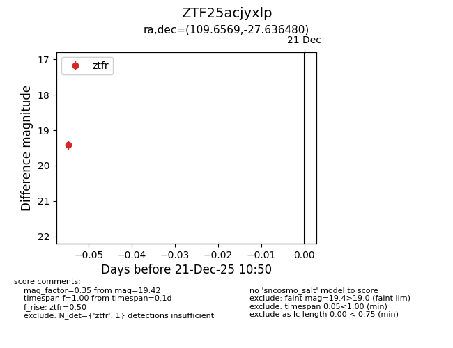
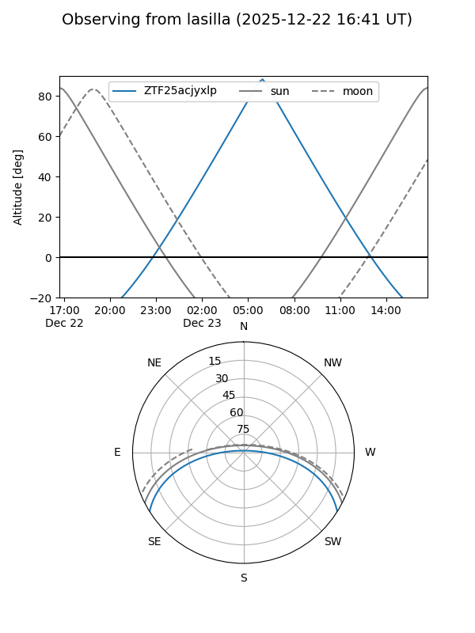
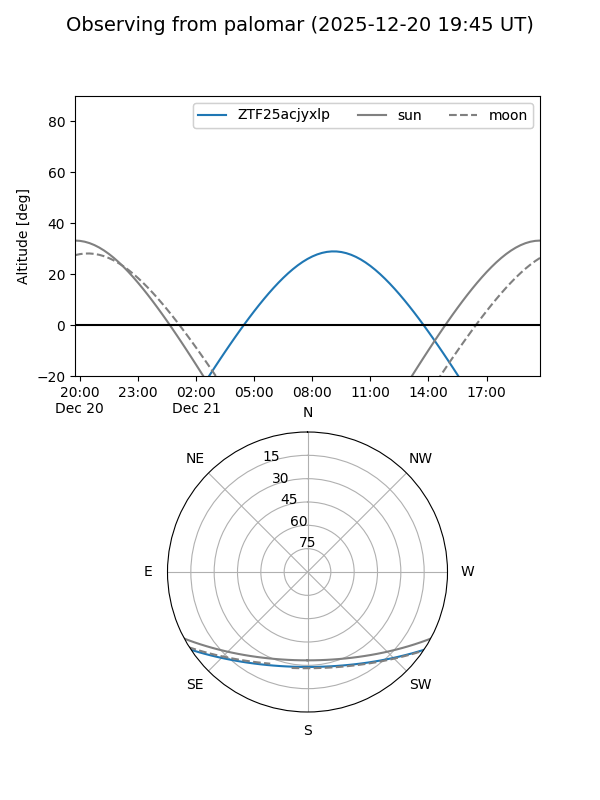
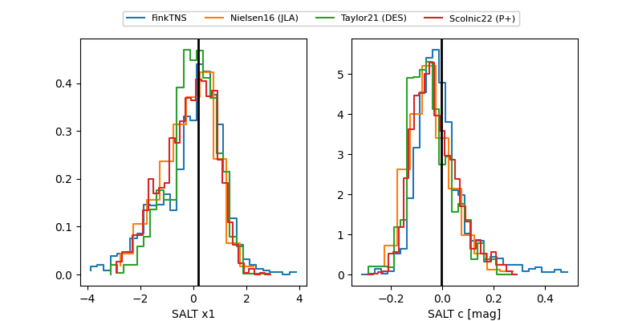

ZTF25acjyxlp
Target ZTF25acjyxlp at 2025-12-21 11:27
Aliases and brokers:
FINK: fink-portal.org/ZTF25acjyxlp
Lasair: lasair-ztf.lsst.ac.uk/objects/ZTF25acjyxlp
ALeRCE: alerce.online/object/ZTF25acjyxlp
alt names
ZTF25acjyxlp (ztf,fink_ztf)
Coordinates:
equatorial (ra, dec) = 109.6569,-27.63648
equatorial (HMS+DMS) = 07:18:37.65,-27:38:11.33
galactic (l, b) = (240.5706,-6.78781)
Flags:
Photometry:
last ztfg=19.67, ztfr=19.42
1 ztfg, 1 ztfr detections
Lightcurve

Visibility


Additional plots
